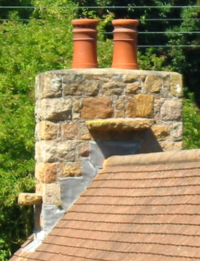
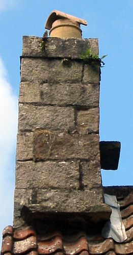

  Ch'est eune vielle crianche qu'des maîsons et des cauminnes en Jèrri ont des pièrres dé chorchièrs.
Tch'est qu'chest, eune pièrre dé chorchièrs? Y'a un tas d'Jèrriais tch'aiment pointer à ches pliates pièrres, des manniéthes dé jutcheux, sus les bords des cheunm'nées d'vielles démeuthes, et dithe ès vîsiteurs qué né v'là des pièrres dé chorchièrs, et explyitchi qu'les gens du temps pâssé bâtîtent ches pièrres pouor pouver offri un mio d'èrpos ès chorchièrs et ès chorchiéthes quand ches'-chîn 'taient à voler à lus sabats.
Înmaginnez don qu'un chorchi tch'est à voler dé St. Ouën jusqu'au Rocque Bèr d'veint un mio lâssée auve toute chutte vol'lie. I' vait eune pièrre dé chorchièrs sus eune maîson et i' d'vale à seule fîn d'y jutchi eune pause.
Bein seu qu'ch'est du niolîn! Au jour d'aniet j'viyons les maîsons auve des liefs en tîle ou en ardouaise, et les pièrres dé chorchièrs appathaîssent au mitan d'la cheunm'née. Mais aut'fais les liefs 'taient en glyi - et pus êpais. Les pièrres 'taient bâties don dans les cheunm'nées pouor protégi l'glyi d'la plyie tchi coulait ava les côtés d'la cheunm'née.
Assa, y'a mains d'chorchell'lie dans la véthitabl'ye explyicâtion!
Viyiz étout: